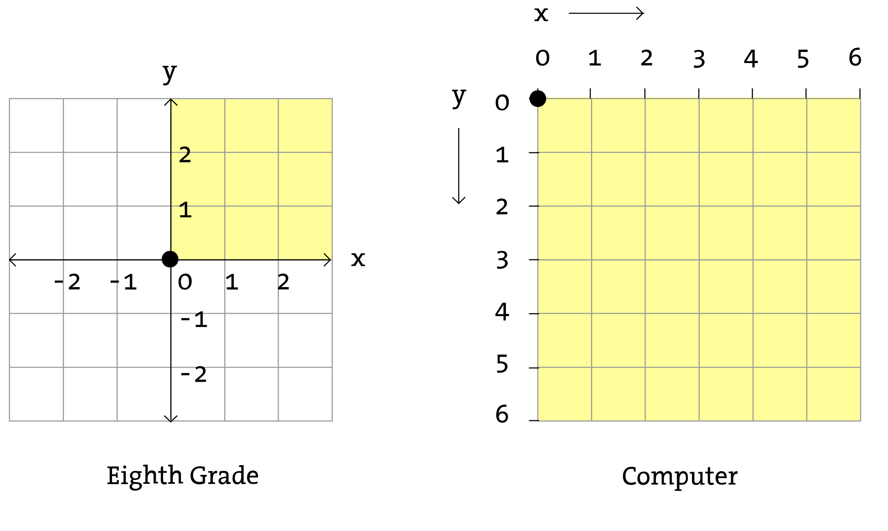

The HTML5 Canvas is a HTML element introduced with the HTML5 standard around 2011 to implement graphical programming within the web browser.
The canvas can be used to draw graphics on the screen using JavaScript. This can be done in vanilla JavaScript (vanilla refers to the practice of writing JavaScript without the addition of libraries like jQuery) but there are many libraries that make drawing to the canvas easier.
p5 is a JavaScript library inspired by the design, code and philosophy of Processing, a Java based library designed starting in 2001 in order to be a language friedly to artists and educators learning how to use programming in an artistic context.
Like Processing,
Since it's origin, many other functionalities have been added to this set to incorporate things like interaction, audio and video.
Let's get started by adding the p5 library to an HTML project and creating a new JavaScript sketch file to begin writing our program.
Start by downloading the p5 library.
In our HTML/CSS review, we created a basic HTML and CSS file to be a placeholder for our project this semester. To begin let's make a copy of those files to start a new project. We're going to work on the first assignemnt, a self portrait, so we can name that folder
Then add the p5.min.js file into the same folder and update your HTML page to add two <script> tags, which are like a <link> tag for CSS or <img> tag for images, but for loading JavaScript documents.
The second <script> tag is for sketch.js which doesn't exist yet, so create a new file and save it as sketch.js. This is where our JavaScript program will begin.
Before we start let's talk about the way a p5 sketch considers dimensions.
Cartesian coordinate system vs p5 coordinate system
Okay, let's get started. Here's the beginning of our program:
Let's talk about some observations about what might be happening here and then go over the code.
Every p5 sketch has two main functions. The setup function is used to setup our drawing and initialize some basics. It runs once when our program starts.
Let's do a quick aside to explain functions in JavaScript, because we're going to be using a them today and for the rest of the semester. Basically everything in JavaScript and p5 uses functions.
A function is simply a series of commands or actions we want the program to perform. Functions have names so we can invoke or call them. When we call a function, the program runs the lines of code contained inside.
A function is sort of like a mini-program inside of the main program.
Functions are used to describe a task that you may want to do more than once, so it can be repeated.
A function is sort of like a recipe for a peanut butter and jelly sandwich. There are a steps that can be followed to make the sandwich that are pretty much the same every time, but might have some variation depending on what ingredients you have available.
Creating a function is like declaring a variable with slightly different syntax. There are a few ways to do it, but the way we will mostly be doing it looks like this:
function foo() {
var fruit = "banana";
console.log(fruit);
}To make that function run, it must be called or
foo();Once defined, the function can be called as many times as needed for the program.
Functions use arguments to change the outcome. An argument might be like a special ingredient in our sandwich.
function sandwich(fruit) {
console.log("A peanut butter, jelly and " + fruit + " sandwich.");
}The result of the function depends on the value argument added. The argument is added in the parentheses when the function is invoked.
sandwich("banana");
sandwich("apple");
sandwich("ketchup");Back to our p5 sketch.
The createCanvas function creates a new <canvas> element on the HTML page where our drawing code will be rendered.
The two numbers, (640, 640) in parentheses are arguments. Some functions, like createCanvas take arguments, which have an effect on the way the function behaves. In this case, the numbers determines the width and height of our drawing in pixel dimensions.
Here's our basic sketch again. Try changing the arguments to createCanvas to see how the sketch is changed.
Now try changing the arguments in the other functions. What happens? Can you guess what each value represents?
Now let's continue. The following is a basic self portrait example.
In p5, setup is called once when the program starts.
The draw function is where all of our drawing code will go. This function runs over and over again for as long as the program is open. So all of that code is being executed about 60 times a second, or however fast your browser is running.
There's a few more functions in here. You may be able to guess what they do based on their names. We'll look through and talk about all of them.
The p5 Reference page has a list of all the functions and properties with links to examples and descriptions.
This type of resource is know as
Click on the shape link in the reference page and choose a 2D primitive and read the reference page. These are what we'll be covering first.
In our sketch we are using default shape functions defined by ellipse and rect.
These lines are functions. Eventually you will write your own functions but for now we're going to learn about them using the
In p5, there are default shapes with different qualities. Shapes are defined by the position in the canvas, the size of the shape and the type of shape.
rect(100, 100, 200, 250);The order of the rect arguments is also (x, y, width, height).
draw function because the drawing only needs to be rendered once. We'll talk more about this when we cover interactivity.
A function is called using the () at the end. These are the special characters that lets the program know to call the function or make it do whatever it is written to do.
Inside the () are ellipse we use the arguments to determine the x and y position of the ellipse on the canvas, as well as the width and height.
In these example, all of the arguments are numerical values like 100 or 200.
The arguments need to be written in the specified order. For ellipse it is (x, y, width, height).
You can also make a circle (an ellipse with the same width and height), by using three arguments: (x, y, size).
ellipse(150, 200, 50, 100);A function is a series of instructions for our program. It's sort of like a mini program within the larger program. A function has a name that describes what it does, such as ellipse which renders or draws an ellipse on the canvas.
arc(150, 200, 50, 100, 0, PI);arc is like an ellipse that has a starting and ending point, like a pie. It also uses the Math constant, PI, as a measurement for the start and end point.
The starting point 0 is at 3 o'clock on a clock face. PI is halfway around at 9 o'clock and PI * 2 or TWO_PI brings us back to the beginning.
By default, a rectangle will be drawn from the top left corner, while the ellipse and arc are drawn from the center.
Using rectMode the rectangle can be changed to draw from the center.
rect, ellipse and arc use an xy coordinate to determine the position and then add a width and height to determine the size of the shape.
These shapes use a series of points and fill lines between the points.
In the previous example, I added some notes into my code using comments. In programming, comments are sections of the script that are not read by the compiler or interpreter. They are used for developers to write notes to other developers explaining what the code is doing in plain English.
Comments can also be used to remove sections of code temporarily to test a program.
In JavaScript, there are two types of comments:
// single line Single lines comments are used to explain one line of code or create sections of code.
// face
rect(10, 10, 10, 10);
ellipse(10, 10, 20); // left eye/*
multi-line
*/Multi-line comments are for blocks of comments to explain an entire file or large section of code.
/*
Self Portrait
by Wayne Gretzky
version 1.0
Jan 1 1999
*/